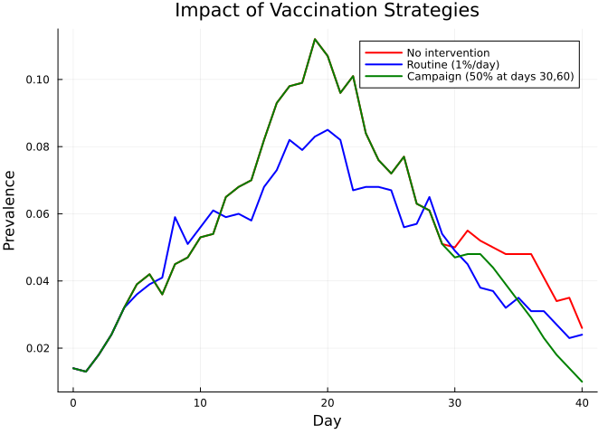
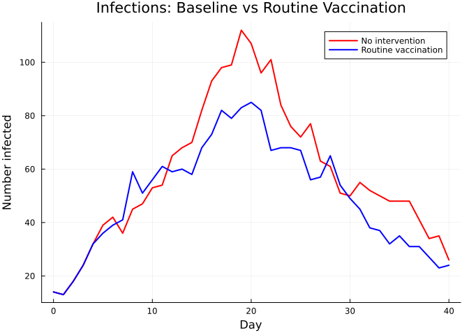
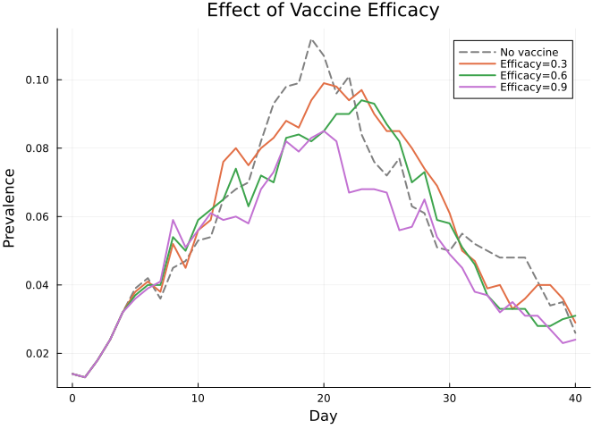
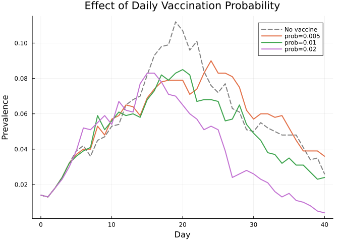
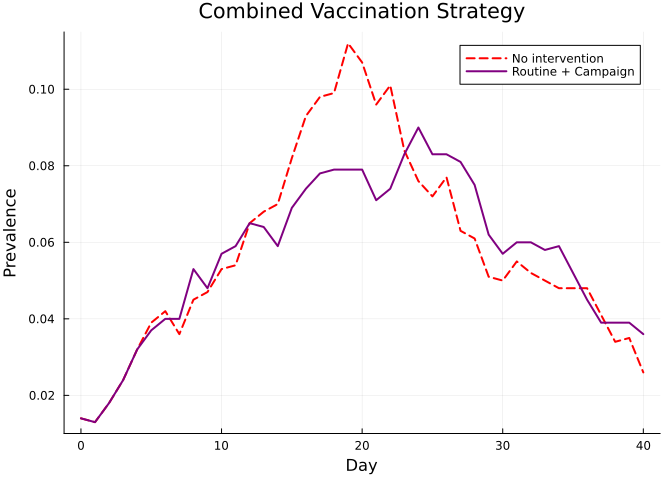

Interventions
Simon Frost
- Overview
- Baseline: no intervention
- Defining a vaccine product
- Routine delivery
- Campaign delivery
- Comparing baseline vs interventions
- Epidemic curves: baseline vs routine vaccination
- Varying vaccine efficacy
- Varying routine delivery probability
- Combining routine and campaign delivery
- Summary
Overview
Interventions in Starsim.jl allow you to model public health responses: vaccination campaigns, routine immunization programs, and more. This vignette demonstrates how to define vaccine products and deliver them through routine and campaign delivery mechanisms, then compare epidemic outcomes.
Baseline: no intervention
First, we run an SIR simulation without any intervention as a reference.
using Starsim
using Plots
n_contacts = 10
beta = 0.5 / n_contacts
sim_base = Sim(
n_agents = 1_000,
networks = RandomNet(n_contacts=n_contacts),
diseases = SIR(beta=beta, dur_inf=4.0, init_prev=0.01),
dt = 1.0,
stop = 40.0,
rand_seed = 42,
verbose = 0,
)
run!(sim_base)
prev_base = get_result(sim_base, :sir, :prevalence)
println("Baseline peak prevalence: $(round(maximum(prev_base), digits=4))")Baseline peak prevalence: 0.112Defining a vaccine product
A Vx product defines what the vaccine does. The efficacy parameter is the probability that vaccination successfully immunizes an individual.
vaccine = Vx(efficacy=0.9)Vx(:vx, "Vaccine", 0.9, StableRNGs.LehmerRNG(state=0x00000000000000000000000000000001))Routine delivery
RoutineDelivery vaccinates a fraction of the population at every timestep. This mimics continuous vaccination programs like childhood immunization.
routine = RoutineDelivery(product=vaccine, prob=0.01, disease_name=:sir)
sim_routine = Sim(
n_agents = 1_000,
networks = RandomNet(n_contacts=n_contacts),
diseases = SIR(beta=beta, dur_inf=4.0, init_prev=0.01),
interventions = routine,
dt = 1.0,
stop = 40.0,
rand_seed = 42,
verbose = 0,
)
run!(sim_routine)
prev_routine = get_result(sim_routine, :sir, :prevalence)
println("Routine vaccination peak prevalence: $(round(maximum(prev_routine), digits=4))")Routine vaccination peak prevalence: 0.085Campaign delivery
CampaignDelivery vaccinates a fraction of the population at specific time points. This mimics mass vaccination campaigns.
campaign = CampaignDelivery(
product = vaccine,
coverage = 0.5,
years = [30.0, 60.0],
disease_name = :sir,
)
sim_campaign = Sim(
n_agents = 1_000,
networks = RandomNet(n_contacts=n_contacts),
diseases = SIR(beta=beta, dur_inf=4.0, init_prev=0.01),
interventions = campaign,
dt = 1.0,
stop = 40.0,
rand_seed = 42,
verbose = 0,
)
run!(sim_campaign)
prev_campaign = get_result(sim_campaign, :sir, :prevalence)
println("Campaign vaccination peak prevalence: $(round(maximum(prev_campaign), digits=4))")Campaign vaccination peak prevalence: 0.112Comparing baseline vs interventions
tvec_b = 0:length(prev_base)-1
tvec_r = 0:length(prev_routine)-1
tvec_c = 0:length(prev_campaign)-1
plot(tvec_b, prev_base, label="No intervention", lw=2, color=:red)
plot!(tvec_r, prev_routine, label="Routine (1%/day)", lw=2, color=:blue)
plot!(tvec_c, prev_campaign, label="Campaign (50% at days 30,60)", lw=2, color=:green)
xlabel!("Day")
ylabel!("Prevalence")
title!("Impact of Vaccination Strategies")
Epidemic curves: baseline vs routine vaccination
n_inf_base = get_result(sim_base, :sir, :n_infected)
n_inf_rout = get_result(sim_routine, :sir, :n_infected)
tvec_ib = 0:length(n_inf_base)-1
tvec_ir = 0:length(n_inf_rout)-1
plot(tvec_ib, n_inf_base, label="No intervention", lw=2, color=:red)
plot!(tvec_ir, n_inf_rout, label="Routine vaccination", lw=2, color=:blue)
xlabel!("Day")
ylabel!("Number infected")
title!("Infections: Baseline vs Routine Vaccination")
Varying vaccine efficacy
efficacies = [0.3, 0.6, 0.9]
p = plot(xlabel="Day", ylabel="Prevalence", title="Effect of Vaccine Efficacy")
# Add baseline
plot!(p, tvec_b, prev_base, label="No vaccine", lw=2, color=:gray, ls=:dash)
for eff in efficacies
vx = Vx(efficacy=eff)
delivery = RoutineDelivery(product=vx, prob=0.01, disease_name=:sir)
sim = Sim(
n_agents=1_000, networks=RandomNet(n_contacts=n_contacts),
diseases=SIR(beta=beta, dur_inf=4.0, init_prev=0.01),
interventions=delivery,
dt=1.0, stop=40.0, rand_seed=42, verbose=0,
)
run!(sim)
prev = get_result(sim, :sir, :prevalence)
plot!(p, 0:length(prev)-1, prev, label="Efficacy=$eff", lw=2)
end
p
Varying routine delivery probability
probs = [0.005, 0.01, 0.02]
p = plot(xlabel="Day", ylabel="Prevalence", title="Effect of Daily Vaccination Probability")
plot!(p, tvec_b, prev_base, label="No vaccine", lw=2, color=:gray, ls=:dash)
for pr in probs
vx = Vx(efficacy=0.9)
delivery = RoutineDelivery(product=vx, prob=pr, disease_name=:sir)
sim = Sim(
n_agents=1_000, networks=RandomNet(n_contacts=n_contacts),
diseases=SIR(beta=beta, dur_inf=4.0, init_prev=0.01),
interventions=delivery,
dt=1.0, stop=40.0, rand_seed=42, verbose=0,
)
run!(sim)
prev = get_result(sim, :sir, :prevalence)
plot!(p, 0:length(prev)-1, prev, label="prob=$pr", lw=2)
end
p
Combining routine and campaign delivery
Multiple interventions can be used together.
vx = Vx(efficacy=0.9)
combined = [
RoutineDelivery(product=vx, prob=0.005, disease_name=:sir),
CampaignDelivery(product=vx, coverage=0.3, years=[50.0], disease_name=:sir),
]
sim_combined = Sim(
n_agents = 1_000,
networks = RandomNet(n_contacts=n_contacts),
diseases = SIR(beta=beta, dur_inf=4.0, init_prev=0.01),
interventions = combined,
dt = 1.0,
stop = 40.0,
rand_seed = 42,
verbose = 0,
)
run!(sim_combined)
prev_combined = get_result(sim_combined, :sir, :prevalence)
tvec_cb = 0:length(prev_combined)-1
plot(tvec_b, prev_base, label="No intervention", lw=2, color=:red, ls=:dash)
plot!(tvec_cb, prev_combined, label="Routine + Campaign", lw=2, color=:purple)
xlabel!("Day")
ylabel!("Prevalence")
title!("Combined Vaccination Strategy")
Summary
Vx(efficacy=...): Defines a vaccine product with a given efficacyRoutineDelivery: Continuous vaccination at a daily probabilityCampaignDelivery: Mass vaccination at specified time points- Multiple interventions can be combined in a single simulation
- Higher efficacy and higher coverage both reduce peak prevalence